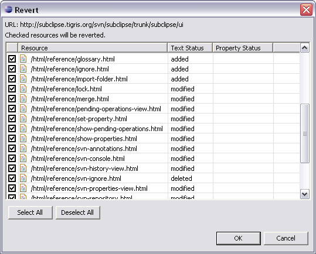

This dialog is accessed via the context menu.
This command will undo changes to a locally modified resource by effectively reverting the file contents to the pristine version contained in your working copy.

To revert a resource, select the individual file or folder in your project and select from the context menu.
If you select a folder resource, all of the locally modified resources in the folder will be listed. Check the files that you want to revert to their pristine state and click OK.
Double-clicking on a file in the list will present a compare dialog showing the differences between the pristine state and the modified version.
 The
revert operation can not be undone. So unless you are absolutely certain
that you want to revert one or more resources to their pristine state, be
sure to back-up your locally modified files first.
The
revert operation can not be undone. So unless you are absolutely certain
that you want to revert one or more resources to their pristine state, be
sure to back-up your locally modified files first.
Related Tasks
Related Reference